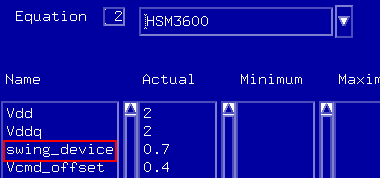

Setting up the data signals
To set up the data input signals (DQi) introduce a Spec variable describing the input swing at the memory device using the level configuration. The level configuration on the test system is calculated within the level equations based on the specified memory device input swing. An example is shown in the figure below.

The following sections give background information of the level equations depending on the ODT operation mode of your memory device.